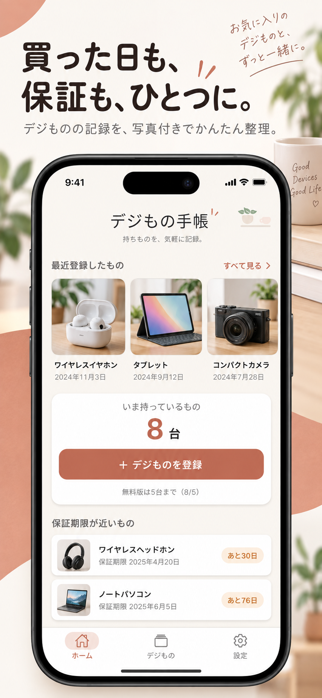
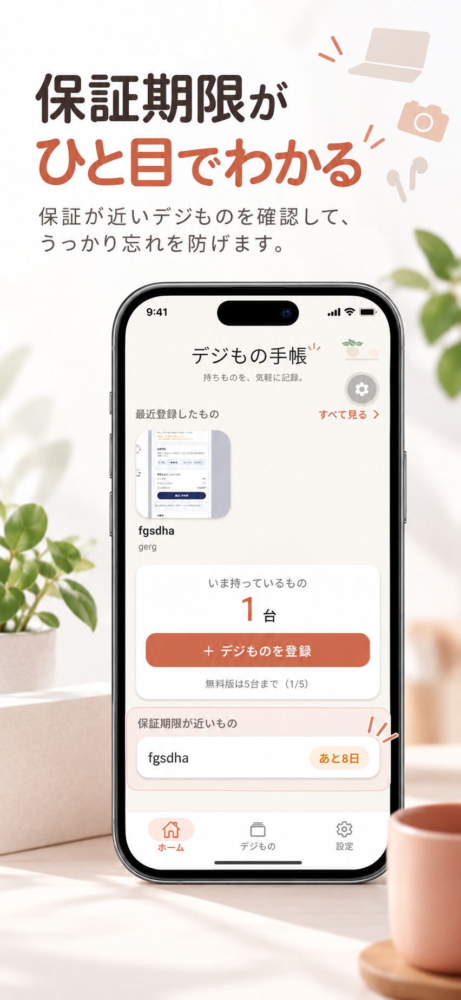
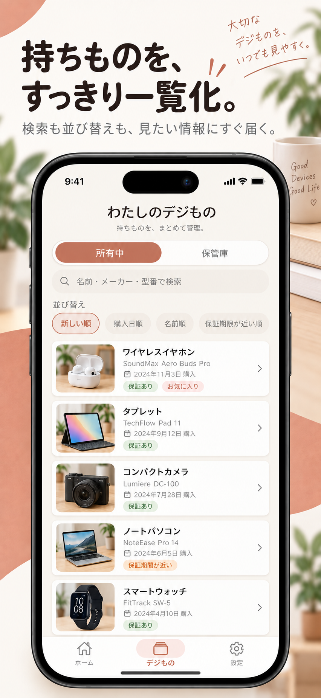
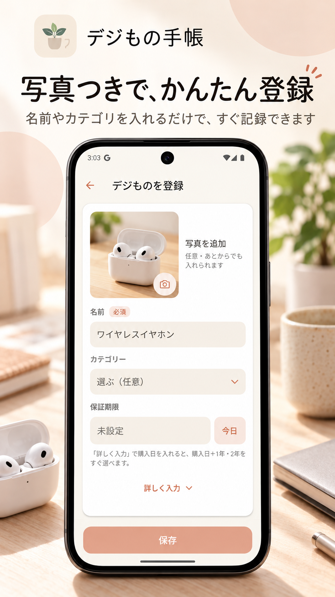
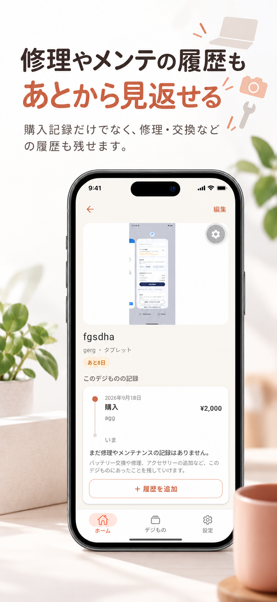
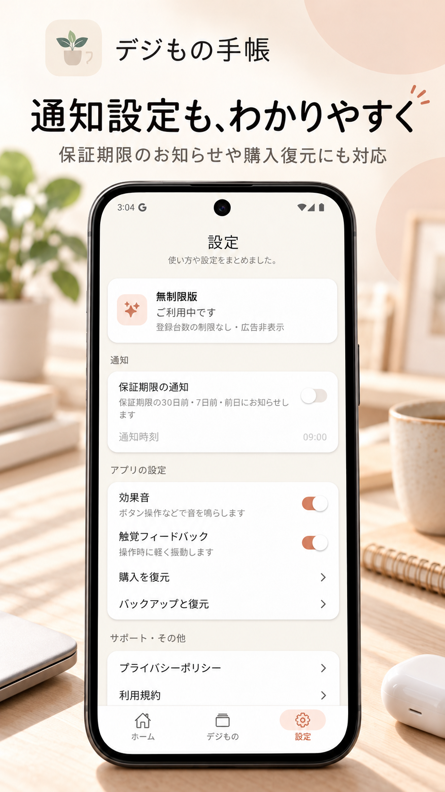

購入日が思い出せない
修理の受付や売却のときに「いつ、いくらで買ったか」が分からず、メールや通販の履歴を探しまわる。
GADGET LIFE NOTE
購入日・保証期限・修理履歴・レシートまで、写真付きでまとめて管理。「いつ買った？」「保証はまだある？」を、あとから探さないためのアプリです。


買った直後は覚えていても、半年後には「いつ買った？」「保証書どこ？」となりがち。デジもの手帳は、あとで必要になる情報を“その時”に残しておくためのアプリです。
修理の受付や売却のときに「いつ、いくらで買ったか」が分からず、メールや通販の履歴を探しまわる。
不具合が出てから確認したら、保証期限を少し過ぎていた。保証書もどこにしまったか分からない。
バッテリー交換や修理をいつ、いくらでしたのか。次に不具合が出たとき、前回のことが分からない。
スマートフォン、パソコン、イヤホン、カメラ、ゲーム機など。入力が必要なのは名前だけ。写真や購入情報、保証、履歴は使いながら足していけます。
毎日開かなくても、久しぶりに使ったときに迷わない。情報量を整理し、必要な操作を見つけやすくしています。




保証期限を登録すると、一覧や詳細に「あと◯日」「本日まで」「保証終了」と表示。設定で通知をオンにすると、保証期限の30日前・7日前・前日に端末の通知でお知らせします。
※ 通知は初期状態ではオフです。端末の設定や状態によっては届かない場合があります。表示はご自身で入力した日付にもとづくもので、メーカー保証を照会するものではありません。
購入・修理・バッテリー交換・アクセサリー追加・清掃やメンテナンス・故障・売却。1台ごとのできごとを時系列のタイムラインで残せます。
紙のレシートや保証書は、写真に撮ってデジものの記録と一緒に保存。修理の受付や問い合わせのとき、引き出しを探さずにすみます。
持っているデジものを写真付きの一覧で確認。名前・メーカー・型番で検索でき、新しい順・購入日順・名前順・保証期限が近い順に並べ替えられます。
設定の「バックアップと復元」から、記録と写真をまとめた1つのファイル（ZIP）を作成。保存先は自分で選べます。新しい端末では、そのファイルから復元できます。
※ 自動のクラウド同期機能ではありません。バックアップファイルはご自身で作成・保管してください。
月額・年額の継続課金はありません。無料版で使い方を確かめてから、必要な方だけ無制限版へ。
※ 価格は日本での価格です。購入画面には、ご利用のストアのその時点の価格が表示されます。無料版で登録済みの記録は、台数にかかわらず閲覧・編集できます。
デジもの手帳には、アカウントを作成する機能がありません。メールアドレスの登録やログインなしで、すぐに使い始められます。
登録した記録や写真は、原則として端末内に保存され、開発者のサーバーへ送信することはありません。無料版の広告配信にともなう情報の扱いを含め、詳しくはプライバシーポリシーをご確認ください。
はい。無料版ではデジものを5台まで登録できます。無料版にはバナー広告が表示されます。
Android版は現在 Google Play で審査中です。公開までもうしばらくお待ちください。
必要ありません。メールアドレスやログインなしですぐ使えます。
記録や写真は原則として端末内に保存されます。クラウド同期の機能はありません。機種変更のときは、バックアップファイルを作成して新しい端末で復元してください。
いいえ。日本では800円の買い切りです。登録台数の上限がなくなり、広告も非表示になります。
YOUR GADGETS, ONE NOTE.
買った日も、保証も、修理も。デジものの記録を、ひとつの手帳へ。